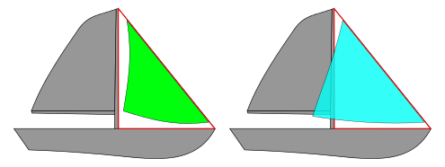

Mizzen Staysail
Basically you need to be on a Yawl for using this.
You used it on the Ella. It is called carbonera in italian.

Usually told to be used for stability. Found this article though.
Do more reasearch in time on this one.
So here a post where you store the different sail types.
You also keep a record of when and how different should be used and the scope and idea of them.
Nothing to say on this one so far.
This is the front-sail. Note the difference between jib and genoa:
The genoa larger surface area increases the speed of the craft in light to moderate winds.
Maximizing the sail area can cause more difficult handling. It may be harder to tack a genoa than a jib, since the overlapping area can become fouled among the shrouds and/or mast unless carefully tended during the tack.
Genoas are very popular in some racing classes, since they count only the foretriangle area when calculating foresail size; a genoa allows a significant increase in actual sail area within the calculated sail area. Check at this to understand.
Basically you need to be on a Yawl for using this.
You used it on the Ella. It is called carbonera in italian.
Usually told to be used for stability. Found this article though.
Do more reasearch in time on this one.
Basically this is a parachute you put on the bow of your boat.
For sure one of the most beautiful to see.

You use it with wind in your tail - 90-180 degrees off the bow.
This is symmeteric and it has implications in terms that you may not use properly the side-wind and the venturi stuff. So here the more tail wind you have the better.
For this reason teh Gennaker was developed.
There is an asymmetric sail and is something in between a Genoa and a Spinnaker.

A gennaker is cut asymmetrically. The neck on the luff is firmly attached to the bow, or better yet, to the bowsprit, the two sheets to the clew, and clearly the halyard to the head.
Due to its asymmetrical design, you can sail higher upwind with gennaker than with a spinnaker, although the sail area is almost the same. However, also not as low downwind as with a spinnaker.
The gennaker is perfect for long space courses with a wind angle in medium winds between 90 and 140 degrees.